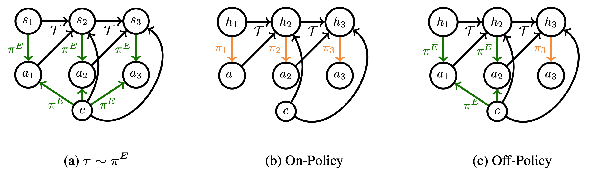

Frequently, an imitation learner might not have access to all the information an expert was using to make decisions. We prove that under certain identifiability conditions, training a sequence model policy via on-policy training is both neccesary and sufficient to match expert performance. Furthermore, we show that both in theory and practice, off-policy training of sequence models can lead to a "latching effect," in which an imitation learner just repeats its own past actions.
Abstract
We consider imitation learning problems where the learner’s ability to mimic the expert increases throughout the course of an episode as more information is revealed. One example of this is when the expert has access to privileged information: while the learner might not be able to accurately reproduce expert behavior early on in an episode, by considering the entire history of states and actions, they might be able to eventually identify the hidden context and act as the expert would. We prove that on-policy imitation learning algorithms (with or without access to a queryable expert) are better equipped to handle these sorts of asymptotically realizable problems than off-policy methods. This is because on-policy algorithms provably learn to recover from their initially suboptimal actions, while off-policy methods treat their suboptimal past actions as though they came from the expert. This often manifests as a latching behavior: a naive repetition of past actions. We conduct experiments in a toy bandit domain that show that there exist sharp phase transitions of whether off-policy approaches are able to match expert performance asymptotically, in contrast to the uniformly good performance of on-policy approaches. We demonstrate that on several continuous control tasks, on-policy approaches are able to use history to identify the context while off-policy approaches actually perform worse when given access to history.
Video
Key Insights
1. Partial Observability in Imitation Learning
For a variety of reasons, we might be attempting to imitate an expert who has access to privledged information (e.g. our self-driving car might not pick up on the hand gestures a human driver would respond to). In full generality, this problem is impossible to solve (e.g. if we never observe a stop sign, how would we know to stop?). However, we might hope that in practice, we observe echoes of an unobserved context over the horizon (e.g. we observe all the other cars around us slowing down) that we can use to act appropriately (e.g. slow down as well). This puts us in a situation where the learner's ability to mimic the expert increases over the horizon, a phenomenon we term asymptotic realizability.
2. The Latching Effect
The standard solution to this sort of problem in sequential decision making is Bayesian filtering. The policy search analog of doing so is using a sequence model policy: $\pi(a_t|s_1, a_1, \dots s_t)$. However, when trains a sequence model in an off-policy manner (e.g. direct regression of the next token), one often observes a sort of latching effect in which the learner just repeats its own past actions (e.g. a self-driving car that begins to turn and then just drives in circles).
3. Understanding and Resolving the Latching Effect
In off-policy training, we are trying to learn a policy such that $\pi(a_t|s_1, a_1, \dots s_t) \approx p(a_t^E|s_1^E, a_1^E, \dots, s_t^E)$, where $E$ denotes expert. Now, for a lot of tasks, an expert might take similar actions over adjacent timesteps. So, instead of learning a complicated mapping from states to action, it is sufficient to learn a policy that just copies the last action to drive down training error. However, when this naive policy is combined with the learner's initially suboptimal past actions, we have a recipe for disaster: the learner just keeps repeating its own mistakes ad infinitum.
At test-time, our learner is attempting to sample from $p(a_t^E|s_1, a_1, \dots, s_t)$. However, we have no reason to believe the model we learned will generalize to our own history distribution. What's really happening here is covariate shift in the space of histories. When this is combined with unavoidable early errors, the learner can quickly go off the rails and stay there. We make this argument more formally in our paper.
We perform experiments in two domains. On a toy bandit problem, we see off-policy learners exihibit sharp phase transitions as far as consistency, in contrast to the uniform value equivalence of on-policy methods. On modifications of the PyBullet suite in which a key piece of information (e.g. the target speed) is hidden from the learner but not the expert, we see that adding history to an off-policy learner like behavioral cloning actually leads to worse performance, while see no such effect for on-policy algorithms like DAgger. We release all of our code at the link below.
[Code]
Paper

Sequence Model Imitation Learning with Unobserved Contexts
Gokul Swamy, Sanjiban Choudhury, J. Andrew Bagnell, Zhiwei Steven Wu
@misc{swamy2022sequence,
title = {Sequence Model Imitation Learning with Unobserved Contexts},
author = {Gokul Swamy and Sanjiban Choudhury and J. Andrew Bagnell and Zhiwei Steven Wu},
year = {2022},
booktitle = {Advances in Neural Information Processing Systems},
volume = {34}
}Acknowledgements
This template was originally made by Phillip Isola and Richard Zhang for a colorful ECCV project, and adapted to be mobile responsive by Jason Zhang. The code we built on can be found here.